사용자는 한글의 자음/모음의 조합 원리에 의해 만들 수 있는 모든 한글 11,172 문자를
입력할 수 있습니다. 실제로 입력할 수 있는 문자의 범위는 사실상 사용자가 현재 사용하고 있는
로케일에 따라 달라지는데, 이것은 이 로케일이 그에 해당하는 문자들을 결정하기 때문입니다.
즉, 만약 사용자가 ko_KR.EUC 로케일에 로그인 해 있다면, 사용자는 KS X 1001에 정의된 모든 문자를
입력할 수 있고, 만약 사용자가 ko_KR.UTF-8 로케일에 로그인 해 있다면, 사용자는 11,172개의 모든
한글을 입력할 수 있게 됩니다. 아래는 한국어에 해당하는 문자 인코딩 표준들과, Solaris에서 지원하는
로케일의 관계를 보여줍니다.
한글을 입력하는데, 아래의 네 부분들이 관여됩니다. 이 부분들은 아래외 같습니다.
중간 영역은 현재 입력되고 있는 글자들을 반전된 비데오 상태로 보여주는 곳입니다.
이 영역은 현재 입력되고 있는 글자들을 임시로 보관하는 부분이며, 이후 사용자나, 입력기 설정에 의해
응용 프로그램으로 전송 됩니다.
이 영역은 현재의 입력 상태와 현재 사용중인 키보드의 이름을 표시합니다.
한글 입력시에는 몇가지의 다른 입력 상태가 나타날 수 있는데 그에 대한 자세한 내용은
잠시후 다시 설명하겠습니다.
입력할 수 있는 한자나, 특수 기호가 한개 이상 있을 경우, 선택 창이 만들어 집니다.
보조 창 영역은 한글 입력을 좀 더 편하게 할 수 있도록 도와주는 보조 프로그램입니다.
3.1.1. ASCII/영어 입력 상태
문자를 입력할 때, 초기 상태는 ASCII/영어를 입력할 수 있는 상태로 되어 있습니다.
이 상태에서 키보드를 누르면 영어 알파벳이 입력됩니다.
이때 상태 창에서는 현재 상태가 ASCII/영어 입력 상태라고 표시 되어 있을 것입니다.
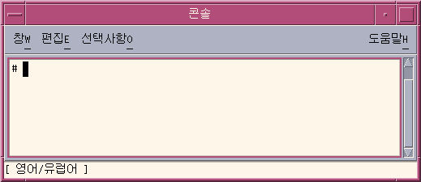
3.1.2 한글 입력 상태로 전한하기
한글을 입력하려면 제일 먼저, 한글 입력 상태로 전환해야 합니다. 그러려면, Control-Space키를 누르거나, 만약 한글 키보드를 가지고 있다면, 한/영 이라고 써 있는 키를 누르십시오.
이 키들은 연속해서 누를 경우 그 상태가 커지거나 켜지는 상태를 반복하게 합니다.
그러면 상태 창에는 현재 입력 상태가 한글 입력상태이며, 또 팔레트 보조 창도 함께 나타납니다.
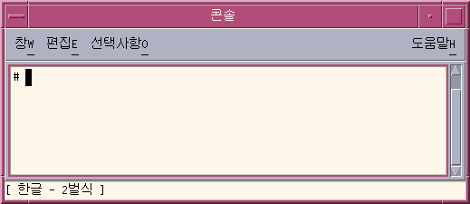
이 상태 창은 또한 현재 사용중인 키보드의 이름도 함께 표시합니다
3.1.3 한글 입력하기
한글 입력 상태가 켜져 있는 상태에서, 키보드를 누르면서 한글을 글을 쓰는 것과 마찬가지 원리로
작성할 수 있습니다.
현재 입력중인 한글이 중간 영역 창에 반저되어 표시 됩니다.
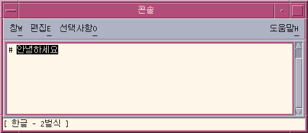
3.1.4 입력중인 글자 삭제하기
Backspace나 Delete 키를 눌러서 글자를 지웁니다. 이 때, 제일 마지막에 입력된 자음이나 모음만이
삭제됩니다. 다음의 보기는 어떻게 Backspace나 Delete 키가 작동하는지를 보여줍니다.
- 가령 다음과 같은, 오타가 포함된 한글 문자를 사용자가 입력하고 하면,
- 삭제 키를 한번 누를 경우, 중간 영역은 다음과 같이 됩니다:
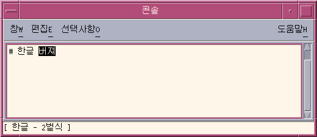
- 삭제 키를 한번 더 누르면, 중간 영역은 다음과 같이 표시됩니다:
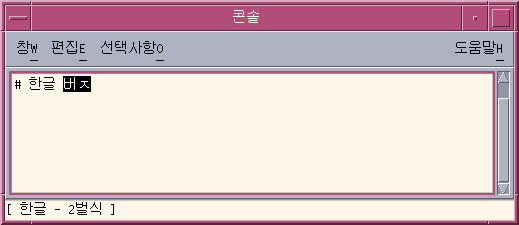
- 삭제 키를 한번 더 누르면, 중간 영역은 다음과 같이 표시됩니다:
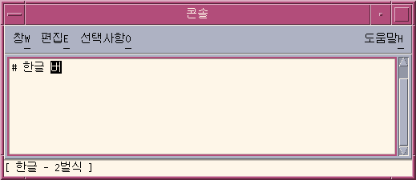
3.1.5 한글 입력 커밋하기
다음의 중간 영역에는 아직 응용프로그램으로 보내지지 않은(커밋 되지 않은) 5개의 한글이 들어 있습니다.
즉 이 글자들은 아직 응용 프로그램에게 알려지지 않은 상태로 중간 영역에만 보관 되어 있습니다.
이 중간영역에 보관된 글자들은 사용자가 Control-K 키를 누를 때, 응용 프로그램에로
보내어 집니다. 이 키 입력 자체는 응용 프로그램에 보내지지 않습니다.
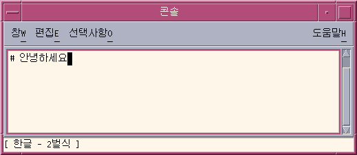
아까 중간 영역에 있던 글자들은 Space 키나 구두 기호, 혹은 한글의 일부가 아닌 다른 문자 키를
입력함으로써 커밋되기도 합니다.
Control-K와는 달리, (물음표와 같은) 구두 기호는 이전에 중간 영역에 있던 한글과 함께 응용 프로그램으로
보내집니다.
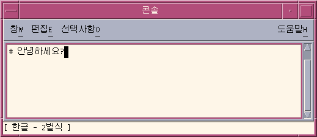
a.6 ASCII/영어 입력 상태로 되돌아 가기
Control+Space 키를 다시 누르면 입력 상태가 ASCII/영어 입력 상태로 다시 바뀝니다.
3.2.1 다른 키보드로 입력 상태 전환하기
아래에 보여진 3가지의 키보드 배열이 지원됩니다.
사용자는 이 세가지의 키보드 배열을 Shift + F2를 누름으로써 전환하여 사용할 수 있습니다.
현재 사용중인 키보드의 이름은 응용 프로그램의 상태 창에 표시됩니다.
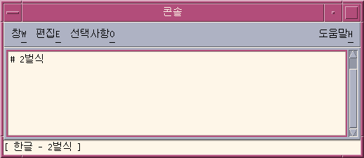
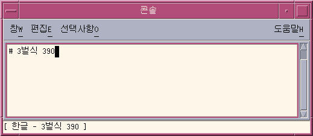
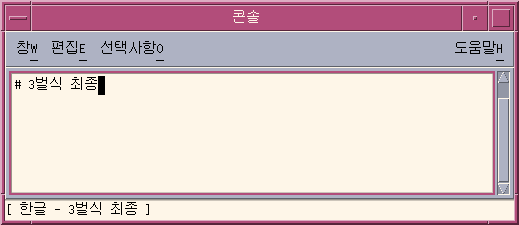
한자를 입력하는 방법에는 여러가지가 있습니다.
가장 쉬운 방법은 입력중인 한글을 한자로 변환하는 방법인데, 이 변환은 글자 단위로 될 수도 있고,
단어단위로 될 수도 있습니다.
중간 영역에 있는 한글을 한자로 변환할 수 있는 방법에는 다음의 두가지가 있습니다.
- 선택 창에서 원하는 후보를 선택하기
- 하나씩 선택 가능한 후보로 변환해 나가기
아래 보기는 어떻게 한글을 한자로 변환 할 수 있는지를 설명합니다.
한글 단어를 한자 단어로 변환할 때도 비슷한 방법으로 할 수 있습니다.
3.3.1 한자 선택
- 한글 입력이 켜 있는 상태에서, 입력하고자 하는 한자의 발음을 입력합니다. 그러면, 현재 입력된
한글이 중간 영역에 나타납니다.
- Control+W를 누릅니다, 그러면 입력 후보 선택 창이 나타납니다.
(사용자의 설정에 따라, 만약 오직 한개의 변환 후보만이 변환 사전에 존재할 경우, 자동적으로 한자로 바뀌어 질 수도 있습니다.)
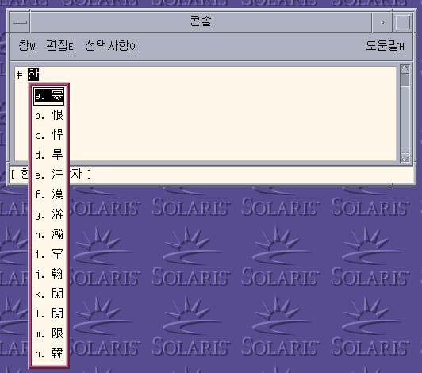
- 여러개의 페이지에 걸쳐 변화 후보가 존재 할 경우, 아래에 표시된 키를 누름으로서 페이지 사이를 이동할 수 있습니다.
| 키 입력 |
이동 |
| Ctrl + N |
다음 페이지 |
| Page Up |
다음 페이지 |
| Ctrl + P |
이전 페이지 |
| Page Down |
이전 페이지 |
- 만약 현재 페이지에 입력하고자 하는 한자가 있으면, 입력 후보의 레이블을 입력하거나,
Space를 눌러서 선택 막대를 원하는 곳까지 이동 한 후 Return키를 눌러 커밋할 수 있습니다.
또 단순히 마우스로 원하는 후보를 클릭할 수도 있습니다.
- Control + Q, Control + E, Control+ R 로도 똑 같은 작업을 수행할 수 있습니다. Control + W를 눌렀을 때와는 응용 프로그램으로 커밋된 문자열의 형식이 다를뿐입니다.
| 키 입력 |
커밋된 문자열의 형식 |
| Ctrl + Q |
한자 |
| Ctrl + W |
옵션 보조창에서 설정된 대로 |
| Ctrl + E |
한글(한자) |
| Ctrl + R |
한자(한글) |
- 만약 이 선택 상태을 취소하고자 한다면, Control + A 를 누릅니다.
3.3.2 한자 단계별 입력
중간 영역에 있던 한자가 응용 프로그램으로 보내집니다.
Control-N이나 Control-P이외에, 출력되지 않는 다른 문자를 입력해도 됩니다. 글자를 응용프로그램으로 보낸 후, 다시 다음 한글을 입력할 준비가 되어 있습니다.
3.3.3 한자 단어 변환
단어 단위로도 한글을 한자로 변환 할 수 있습니다. 그 방식은 위에서 설명한 한글을 한자로 변환하는 방식과 똑 같습니다.
Control-N(단계별 입력) 이나 Control-W (선택 창 입력)을 눌러서 한자 변환을 시작할 수 있습니다.
한글 단어를 입력 한 후 Control-W를 입력하면 다음과 같은 창을 볼 수 있습니다.
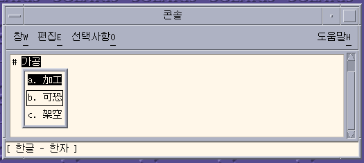
위의 창에는 중간 영역에 있는 한글을 변환 할 수 있는 3 후보들의 목록이 표시되고 있습니다.
사용자는 키보드로 직접 입력하기 힘든 특별한 기호들을 입력할 수 있습니다.
이 방식 또한 한자 선택창을 통해 한자를 입력하는 것과 유사합니다.
- Control-N와 Control-P는 다음/이전 페이지를 이동하게 해 줍니다.
- 선택 후보의 레이블을 입력하면 해당 후보를 응용 프로그램으로 커밋하고 다시 한글 입력 상태로 되돌아 갑니다.
- Control-A를 누르면 언제든지 현재 선택 입력 상태를 빠져 나와 처음 한글 입력 상태로 되돌아 갈 수 있습니다.
특수 기호를 입력하려면,
- 한글 입력상태가 켜져 있는 상태에서, Control-J를 누릅니다. 그러면 상태 창이 현재 입력 상태가 기호 입력 상태임을 알려주고, 선택할 수 있는 기호들의 종류가 나열된 창이 만들어 집니다.
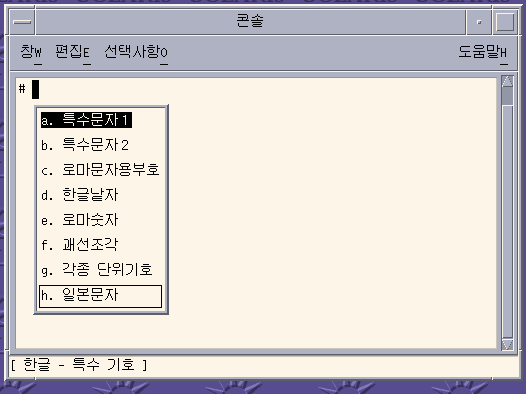
- 원하는 종류를 선택합니다.(이 경우는 a) 그러면 아래와 같은 검색 창이 만들어 집니다.
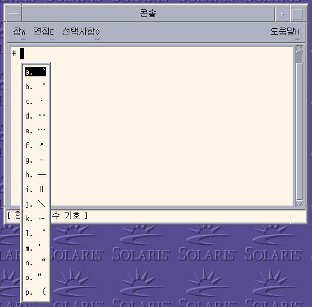
- Control-N를 여섯 번 누르면, 다음의 창이 표시됩니다.
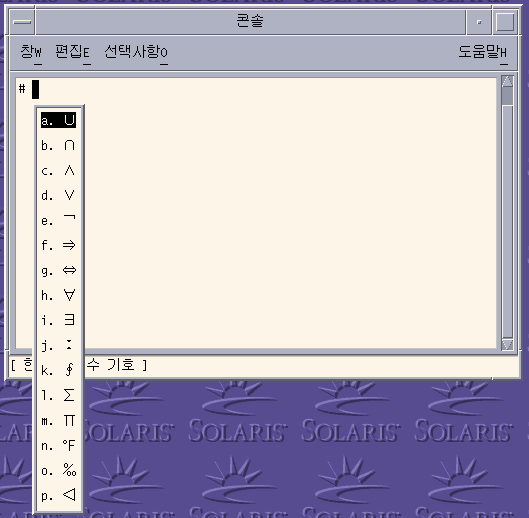
- k를 입력해서 특수 기호를 응용 프로그램으로 보내고 다시 한글 입력 모드로 되돌아 갑니다.
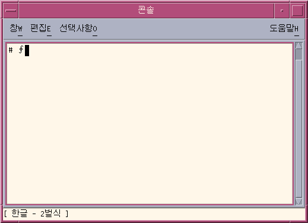
- 만약 기호 입력 상태중 취소하고 싶으면 언제든지 Control + A를 누릅니다.
3.5.
16진수 값으로 한글 입력하기
현재 로케일에 포함되는 모든 한글은 그 한글의 Hex 값으로 입력할 수 있습니다.
ko_KR.EUC 로케일에서는 KS X 1001에 정의된 값으로 한글을 입력할 수 있습니다.
ko_KR.UTF-8 로케일에서는 Unicode에 정의된 모든 한글의 UTF-8 인코딩 값으로 한글을 입력할 수 있습니다.
아래 표는 한글을 입력하기 위해 사용할 수 있는 인코딩 방식을 보여줍니다.
| 현재 로케일 |
키 입력 |
사용 할 인코딩 |
| ko_KR.EUC |
Contrl+X |
KS X 1001 |
| ko_KR.UTF-8 |
Control+X |
KS X 1001 |
| ko_KR.UTF-8 |
Control+Shift+X |
UTF-8 |
16진수 입력을 하려면, Control[+Shift]+X를 눌러 16진수 입력 모드를 시작합니다.
또 팔레트 보조 창에서 16진수 입력 모드를 선택할 수도 있습니다.
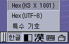
ko_KR.EUC 로케일과 ko_KR.UTF-8 로케일에서 16진수로 한글을 입력하려면,
- 한글 입력 상태가 켜진 상태에서,
- Control-X를 눌러 16진수 한글 입력 모드를 시작합니다.
그러면, 상태 창이 16진수 입력 상태가 시작되었음을 보여줍니다.
또한 한글을 입력하기 위해
KS X 1001의 입력 값을 사용하고 있음을 보여줍니다.
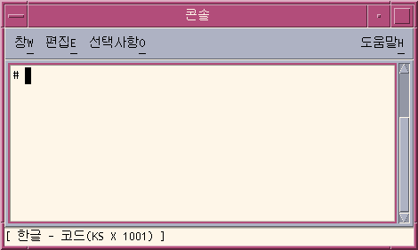
또 팔레트 보조 윈도우 또한 현재의 입력 상태를 보여줍니다.
이 상태에서 입력할 수 있는 키는 오직 0-9, a-f, 그리고 Control-X(16진수 입력 상태 종료) 뿐 입니다.
- 처음 3개의 16진수 값을 입력 하십시오, 여기서는 a2d가 중간 영역에 있습니다.
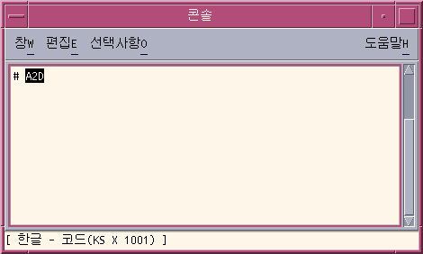
- d를 입력합니다. 그러면 다음의 글자가 자동으로 응용프로그램으로 커밋되어 표시됩니다.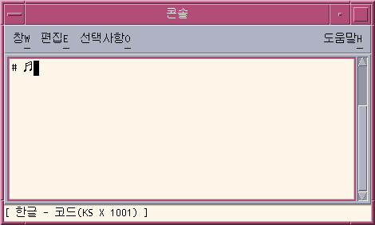
- Control-X를 다시 눌러서 16진수 입력 상태를 마칠때 까지 이와 같은 방식으로 한글을 입력할 수 있습니다.
- Control+Shift+X를 누르면, UTF-8 인코딩 값으로 한글을 입력할 수 있습니다.
3.6. 전자/반자 입력 하기
전자 입력 상태를 시작하려면, 한글 입력 상태에서, [Shift+Spacebar]를 입력합니다.
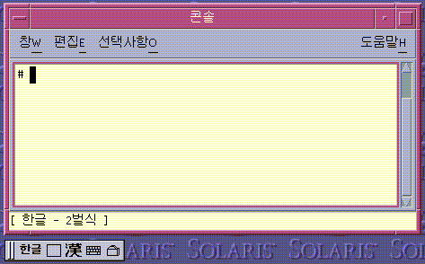
전자 입력 상태에서는 전자 문자가 응용 프로그램으로 커밋됩니다.
예를 들어서, 'a'를 입력하면, 전자 문자인 ' a'가 응용프로그램으로 커밋됩니다.
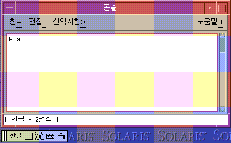
팔레트 보조 창은 다음의 버튼으로 구성됩니다.
- Grabber:팔레트 보조 창을 이동하고자 할때 이곳을 클릭하여 이동합니다.
- 입력 상태 선택기: 이 단추를 선택하여 원하는 입력 상태를 선택합니다.
이 단추를 클릭하면, 다음의 하위 메뉴가 나타납니다.
- 16진수 한글 입력(KS X 1001)
- 16진수 한글 입력(UTF-8)
- 특수 기호 입력
- 전자/반자 입력 상태 선택기:이 버튼을 클릭하면, 전자/반자 입력 상태를 전환 할 수 있습니다.
- 한글-한자 변환 버튼: 이 버튼을 클릭하면 현재 중간 영역에 있는 한글을 한자로 변환할 수 있습니다.
- 가상 키보도 버튼: 이 버튼을 클릭하면 가상 키보도 보조 창을 시작할 수 있습니다.
- 유틸리티 버튼
4.2. 옵션 설정 보조 창
이 창을 시작하려면, 팔레트 창의 유틸리트 버튼을 클릭한 후 '입력기 속성 설정' 메뉴를 선택합니다.
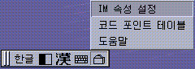
이 창으로, 한글 입력기가 작동하는 방법을 조정하고, 자신이 원하는 기본 값으로 저장할 수 있습니다.
이 창에서는 다음과 같은 옵션들을 선택할 수 있습니다.
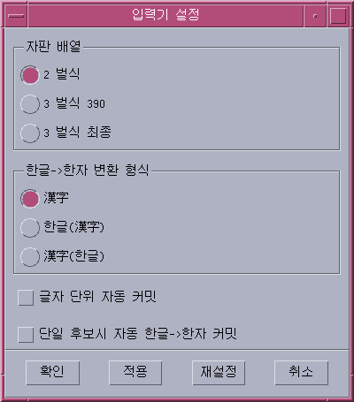
- 기본 키보드 배열
- 기본 한글-한자 변환 형식
- 글자 단위로 자동으로 중간 영역 글자 커밋하기
이 옵션을 선택하면, 중간 영역에 있는 글자가 하나의 한글을 완성하자 마자 응용 프로그램으로
커밋됩니다. 따라서 따로 Control+K를 누르기 전에 글자 단위로 커밋됩니다.
- 단일 후보시 자동으로 한자 후보 커밋
이 옵션을 선택하면, 변환하고자 하는 한자 후보가 한개만 존재할 경우, 사용자에게 묻지 않고
바로 응용 프로그램으로 커밋합니다.
4.3. 가상 키보드 보조 창
이 창을 시작하려면, 팔레트 보조 창에서 가상 키보드 버튼을 누릅니다.
- 2 벌식
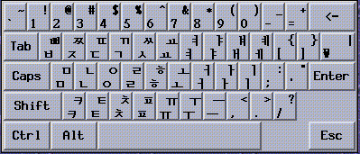
- 3 벌식 390
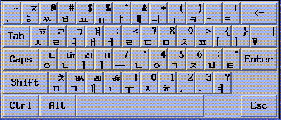
- 3 벌식 최종
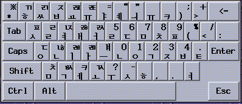
가상 키보드에 있는 버튼을 클릭하여 한글을 입력할 수 있습니다.
가상 키보드 보조 창을 닫으려면, 팔레트 보조 창의 가상 키보드 버튼에 있는 '키보드 닫기' 메뉴를 클릭합니다.
4.4. 검색 표 보조 창
이 창을 시작하려면, 팔레트 보조 창의 유티리티 버튼을 클릭한 후, 코드 포인트 테이블 메뉴를 선택합니다.
아래와 같은 창이 나타납니다.
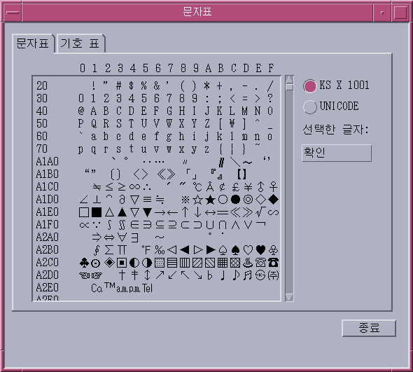
이 창을 이용하여 현채 로케일에서 입력 가능한 모든 글자/기호를 직접 찾아서 입력할 수 있습니다.
이 창은 아래의 2개의 탭을 가지고 있습니다.
- 문자 표: 선택 된 문자 세트에 포함된 모든 글자들이 코드 값에 따라 정렬되어 있습니다.
- 기호 표: 특수 기호들이 기호들의 종류에 따라 분류되어 있습니다.
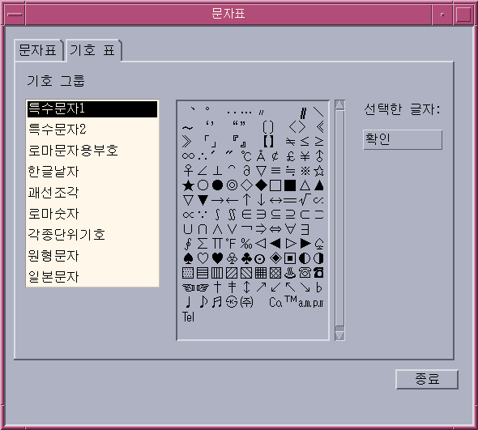
이 창에 있는 글자를 응용 프로그램에 입력하려면, 원하는 글자를 더블 클릭하거나,
글자를 선택한 후, '확인' 버튼을 누릅니다.
4.5. 입력기 도움말
한글 입력기의 도움말을 보려면, 팔레트 보조 창에 있는 유틸리티 버튼을 클릭한후 입력기 도움말 메뉴를 선택합니다.